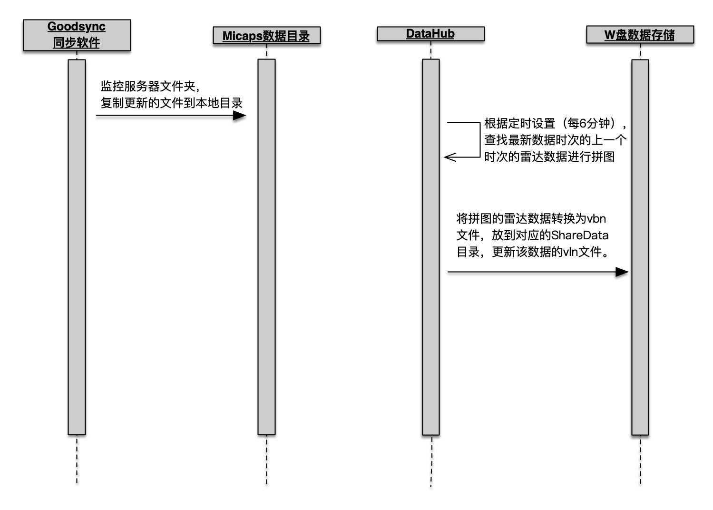

新特性
- 新的CMISS数据任务集数据下载和转化为一体，改变之前数据下载和转化需要分别配置的情况。
- 自动处理单个CMISS接口中包括的所有要素，无须为单个要素新建不同的数据处理任务。
- 支持并发处理数据任务，稳定性更高。
- 处理数据的时效性更高，支持数据更新消息提醒。
- 缩短了数据处理任务的配置时间，新建任务时自动生成相关配置。
- 运行于B/S架构，可以在任何机器上监控数据任务的运行情况。
概览
概览提供了系统运行情况总览的视图，包括错误日志，任务数量统计和快捷导航。

数据服务
所有数据任务都在此设置和管理。
CMISS
所有通过CMISS接口获取的数据任务都在此管理，包括地面观测、数值预报、雷达、云图、城镇预报、台风路径和旅游。
备注： 目前旅游数据仅适用于个别用户。
快速开始
- 打开DataHub 2.0，进入到数据服务-CMISS
- 点击经纬度配置设置数据源，设置省市编号,站点级别,保存。
备注：
- 格点数据的经纬度配置和此处的经纬度配置是共用的，建议选择自动站较多的一小时气温数据读取经纬度配置。
- 省市编号，选择当前所处省份
- 站点级别：011、012、013表示国家站，只针对obs.xml文件
- 数据源参考 http://服务器IP/cimiss-web/api?userId=CMISS用户名&pwd=CMISS密码
- 手动执行一条任务,可以下载到xls数据文件。
- 点击经纬度配置选择刚下载的xls文件读取经纬度信息,保存。
- 手动执行一条任务,检查数据在引擎的渲染效果。
- 根据渲染效果调整经纬度。
- 点击定时配置,配置数据的更新时间。
- 点击激活,开启数据自动处理。
经纬度配置

定时配置

| 序号 | 数据类型 | 更新频次 |
|---|---|---|
| 1 | 地面观测 | 每10分钟 |
| 2 | 数据预报 | 每天的4点、16点 |
| 3 | 雷达 | 每6分钟 |
| 4 | 云图 | 每小时的10分，40分 |
| 5 | 城镇预报 | 每小时的47分 |
| 6 | 台风 | 每小时的13分 |
| 7 | 旅游 | 每个整点 |
备注： 上表中的时间使用24小时制。
地面观测
CMISS地面观测数据处理流程

备注： 所有的地面观测数据（自动站）默认保留24小时，可以通过配置修改。
添加地面观测
- 点击添加新项目
- 选择地面观测页签
- 填入数据名称，例如：自动站逐小时观测
备注： 数据名称中英文都可以。
- 选择接口类型，例如：地面逐小时资料
- 选择目标路径，例如：W:\SharedData\FetchData
备注： 系统会根据接口类型自动在设置的目标路径下自动新建对应的数据文件夹。
地面观测接口类型及数据类型对应表
| 序号 | 接口类型 | 数据类型 |
|---|---|---|
| 1 | 地面逐小时资料 SurfEle | AWS_TEM(自动站整点气温) AWS_Tmax1H(自动站1小时最高温) AWS_Tmin1H(自动站1小时最低温) AWS_Rain1H(自动站1小时降雨量) AWS_CLO_Cov(自动站总云量) AWS_RHU1H(自动站1小时相对湿度) AWS_CLO_Cov_Low(自动站低云量) |
| 2 | 地面日值资料 SurfEleDay | AWS_Rain_2008(20到08时的降水) AWS_Rain_0820(08到20时的降水) AWS_Rain_2020(20到20时的降水) AWS_Rain_0808(08到08时的降水) AWS_Tmax1D(日最高温) AWS_Tmin1D(日最低温) AWS_Diff1D(日温差） AWS_DTMax1D(日最高变温） AWS_DTMin1D(日最低变温） RHU_Avg1D(日平均相对湿度） RHU_Min1D(日最小相对湿度） VIS_Min1D(日最低能见度） |
| 3 | 地面资料统计 StatSurfEle | AWS_Tmax24H(自动站24小时最高气温) AWS_Tmin24H(自动站24小时最低气温） AWS_TEM_Change_24H(自动站24小时变温) AWS_ACCRain24H(自动站24小时累计降水) AWS_Rain3H(自动站3小时降雨量) AWS_Rain6H(自动站6小时降雨量) AWS_Rain12H(自动站12小时降雨量) AWS_VIS24H(自动站24小时最小能见度) AWS_WIN24H(自动站24小时极大风) |
| 4 | 累计降水 AccuRain | AWS_ACCRain（自动站手动逐小时累计降雨量） |
| 5 | 统计降水 StatRain | AWS_CountRain（自动站手动降雨量总和） |
| 6 | 逐小时环境 AQI |
备注： 降水的数据0和0.0的区别，0表示观测了降水但是无法测量，0.0表示无降水。
自动站插值分辨率规范
自动站要素可支持间隔：2.5、0.25、0.125、0.1、0.05、0.02、0.01（单位°）
-
全国大部分省适用于0.02（单位°）
-
新疆、西藏、内蒙、甘肃、青海、试用0.05。（单位°）
-
北京、天津、上海、海南适用于0.01（单位°）
-
其他市一级区域适用于0.01（单位°）
-
全中国使用0.125（单位°）
数值预报
CMISS数值预报处理流程
处理流程.png)
备注：欧洲中心细网格(Ecthin)的预报时间一般是10天，共计53个文件。
CMISS智能网格处理流程
添加数值预报
- 点击添加新项目
- 选择数值预报页签
- 填入数据名称，例如：欧洲中心细网格
备注： 数据名称中英文都可以。
- 选择接口类型，例如：欧洲中心-高分辨率-东北亚
- 选择要素 ，例如：TEM 925、TEM 850、GPH 500
备注： 只有接口类型是 欧洲中心-高分辨率-东北亚 需要选择要素。
- 选择目标路径，例如：W:\SharedData\FetchData
备注： 系统会根据所选择的要素自动在设置的目标路径下自动新建文件夹。。
接口类型列表
| 序号 | 接口类型 | 备注 |
|---|---|---|
| 1 | 欧洲中心-高分辨率-东北亚 | |
| 2 | 省级格点预报订正产品 | 智能网格 |
| 3 | 全国雨量落区预报产品 | D14类数据 |
数值预报-欧洲中心-高分辨率-东北亚-接口要素及数据文件对应表
| 序号 | 要素 | 数据文件 |
|---|---|---|
| 1 | TEM 925 | Ecthin_TEM925(EC亚洲925百帕温度) |
| 2 | TEM 850 | Ecthin_TEM850(EC亚洲850百帕温度) |
| 3 | RHU 850 | Ecthin_RHU850(EC亚洲850百帕相对湿度) |
| 4 | RHU 925 | Ecthin_RHU925(EC亚洲925百帕相对湿度) |
| 5 | GPH 500 | Ecthin_GPH500(EC亚洲500百帕位势高度) |
| 6 | GPH 700 | Ecthin_GPH700(EC亚洲700百帕位势高度) |
| 7 | GPH 850 | Ecthin_GPH850(EC亚洲850百帕位势高度) |
| 8 | GPH 925 | Ecthin_GPH925(EC亚洲925百帕位势高度) |
| 9 | GPH 1000 | Ecthin_GPH1000(EC亚洲1000百帕位势高度) |
| 10 | WINU WINV 500 | Ecthin_UV500(EC亚洲500百帕风场) |
| 11 | WINU WINV 700 | Ecthin_UV700(EC亚洲700百帕风场) |
| 12 | WINU WINV 850 | Ecthin_UV850(EC亚洲850百帕风场) |
| 13 | WINU WINV 925 | Ecthin_UV925(EC亚洲925百帕风场) |
雷达
CMISS雷达处理流程

添加雷达
- 点击添加新项目
- 选择雷达页签
- 填入数据名称，例如：Local_1
备注： 数据名称中英文都可以。
- 选择目标路径，例如：W:\SharedData\Images_DB
卫星云图
CMISS卫星云图处理流程

添加卫星云图
- 点击添加新项目
- 选择云图页签
- 填入数据名称，例如：IR1
备注： 数据名称中英文都可以。
- 选择目标路径，例如：W:\SharedData\Images_DB
城镇预报
此任务会将SNFWD精细化报文转换为格点数据和点数据。
CMISS城镇预报处理流程

添加城镇预报
- 点击添加新项目
- 选择城镇预报页签
- 填入数据名称，例如：CSYB
备注： 数据名称中英文都可以。
- 选择目标路径，例如：W:\SharedData\FetchData
台风路径
CMISS台风处理流程
添加台风路径
- 点击添加新项目
- 选择台风路径页签
- 填入数据名称，例如：typhoon
备注： 数据名称中英文都可以。
- 选择目标路径，例如：W:\SharedData\FetchData
数据任务的其它操作
- 激活任务
- 修改配置
备注： 修改配置时任务必须处于非激活状态。
- 手动执行任务
- 点击手动按钮
- 选择开始日期和结束日期，并点击确定。
- 查看日志
Micaps
格点数据
处理非CMISS接口的格点数据，包括自动站、D4类数据、D11类数据、D14类数据、GRB2数据（单要素）和GRB2数据（多要素）
自动站数据
Micaps自动站数据处理流程

添加自动站数据
- 点击添加新项目
- 选择自动站页签
- 填入数据名称，例如：AWS_Tmin1H
备注： 数据名称建议使用英文命名。
- 选择数据路径，例如：D:\Micaps_data\AWS\AWS_Tmin1H
- 选择目标路径，例如：W:\SharedData\FetchData\newIsoTherms
备注：系统会根据数据名称自动在设置的目标路径下自动新建文件夹。
- 设置列表数量，设置为：100
- 设置源数据时区，点击确认保存。
D4类数据
Micaps D4类数据处理流程

备注： 只有数据的时次跟上次时次不同才会清空数据清数据文件夹。
添加D4类数据
- 点击添加新项目
- 选择D4类数据页签
- 填入数据名称，例如：Ecthin_GPH500
备注： 数据名称建议使用英文命名。
- 选择数据路径，例如：D:\Micaps_data\Ecthin\Ecthin_GPH500
- 选择目标路径，例如：W:\SharedData\FetchData\newIsoBars
备注： 系统会根据数据名称自动在设置的目标路径下自动新建文件夹。
- 设置数据类型，例如：设置为预报
- 设置源数据时区，例如：选择“按北京时”，点击确认保存。
D11类数据
Micaps D11类数据处理流程
备注： 只有数据的时次跟上次时次不同才会清空数据清数据文件夹。
添加D11类数据
- 点击添加新项目
- 选择D11类数据页签
- 填入数据名称，例如：Ecthin_UV500
备注： 数据名称建议使用英文命名。
- 选择数据路径，例如：D:\Micaps_data\Ecthin\Ecthin_UV500
- 选择目标路径，例如：W:\SharedData\FetchData\Wind
备注： 系统会根据数据名称自动在设置的目标路径下自动新建文件夹。
- 设置列表数量，设置为：100
- 设置数据类型，例如：设置为预报
- 设置源数据时区，例如：选择“按北京时”，点击确认保存。
D14类数据
Micaps第14类数据处理流程
添加D14类数据
- 点击添加新项目
- 选择D14类数据页签
- 填入数据名称，例如：D14
备注： 数据名称建议使用英文命名。
- 选择数据路径，例如：D:\Micaps_data\D14
- 选择目标路径，例如：W:\SharedData\FetchData\newIsoPrecip
备注： 系统会根据数据名称自动在设置的目标路径下自动新建文件夹。
GRB2数据（单要素）
MicapsGRB2数据处理流程
GRB2数据（单要素）
- 点击添加新项目
- 选择GRB2数据（单要素）页签
- 填入数据名称，例如：
备注： 数据名称建议使用英文命名。
- 选择数据路径，例如：D:\Micaps_data\Ecthin\SmartGrid_SPCC
- 在
- 选择目标路径，例如：W:\SharedData\FetchData\newIsoTherms
备注： 系统会根据数据名称自动在设置的目标路径下自动新建文件夹。
- 设置列表数量，设置为：100
- 设置数据类型，例如：设置为预报
- 设置源数据时区，例如：选择“按北京时”，点击确认保存。
数据任务的其它操作
- 激活任务
- 修改配置
备注： 修改配置时任务必须处于非激活状态。
- 手动执行任务
- 点击手动按钮
- 选择开始日期和结束日期，并点击确定。
- 查看日志
卫星云图
处理非CMISS接口的卫星云图数据
Micaps卫星云图处理流程
添加卫星云图
- 点击添加新项目
- 填入数据名称，例如：IR1
- 选择数据路径，例如：D:\Micaps_data\satellite
- 选择目标路径，例如：W:\SharedData\Images_DB\satellite
备注： 系统会根据数据名称自动在设置的目标路径下自动新建文件夹。
- 选择卫星配置的通道，例如：IR1
备注： 系统目前会默认选择IR1进行处理，此配置是方便之后扩展，可不设置。
- 设置源数据时区，例如：选择“按北京时”，点击确认保存。
雷达
处理非CMISS接口的的雷达数据，包括Bin、Pup、LatLon和多站拼图。
Micaps雷达数据处理流程

| 序号 | 雷达 | 备注 |
|---|---|---|
| 1 | Bin | |
| 2 | Pup | |
| 3 | LatLon | 天气网使用的雷达产品，无须拼图 |
| 4 | 多站拼图 |
添加Pup
- 点击添加新项目
- 选择Pup页签
- 填入数据名称，例如：Pup
- 选择数据路径，例如：D:\Micaps_data\radar\Z9770
- 选择目标路径，例如：W:\SharedData\Images_DB\radar
备注： 系统目前会默认选择IR1进行处理，此配置是方便之后扩展，可不设置。
- 设置源数据时区，例如：选择“按北京时”，点击确认保存。
添加多站拼图
- 点击添加新项目
- 选择多站拼图页签
- 填入数据名称，例如：多站拼图
- 选择数据路径，例如：D:\Micaps_data\radar\radar_pt
- 选择目标路径，例如：W:\SharedData\Images_DB\radar
备注： 系统目前会默认选择IR1进行处理，此配置是方便之后扩展，可不设置。
- 设置源数据时区，例如：选择“按北京时”，点击确认保存。
城市预报
处理非CMISS接口的城市预报数据，也会同时转为格点数据和点数据。
添加城镇预报
Micpas城镇预报数据处理流程
- 点击添加新项目
- 填入数据名称，例如：snwfd_hainan
- 选择数据路径，例如：D:\Micaps_data\pointdata\SNWFD_local
- 选择目标路径，例如：W:\SharedData\FetchData
备注： 系统目前会默认选择IR1进行处理，此配置是方便之后扩展，可不设置。
- 选择是否移除小数点
- 设置可选参数，包括备份路径、是否移除数据。
脚本调用
目前只使用在电码的数据转换。
全国站点管理
管理站点的中文名称对照表。